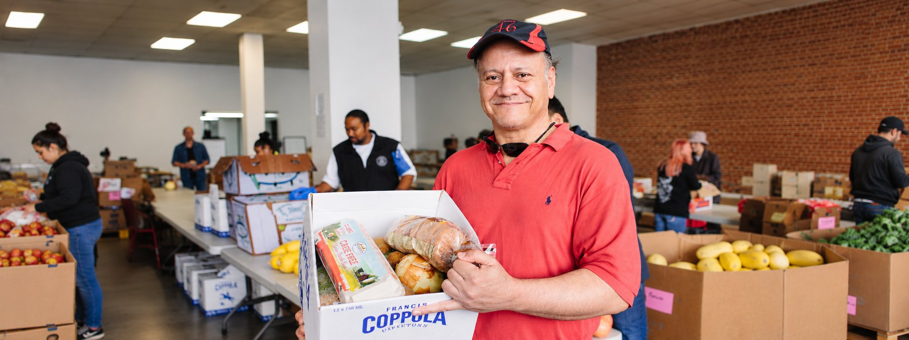
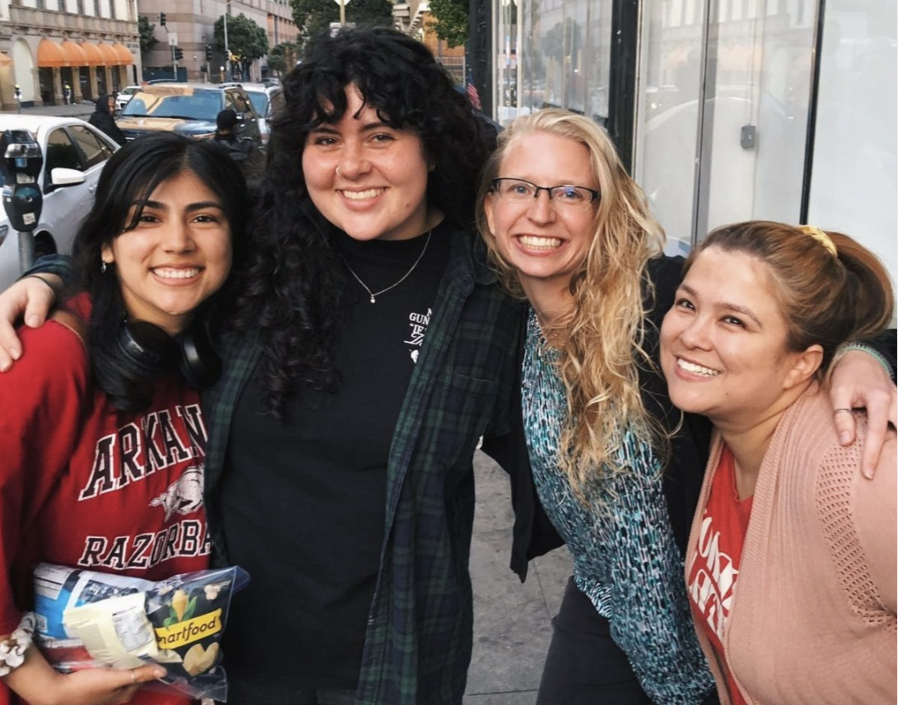
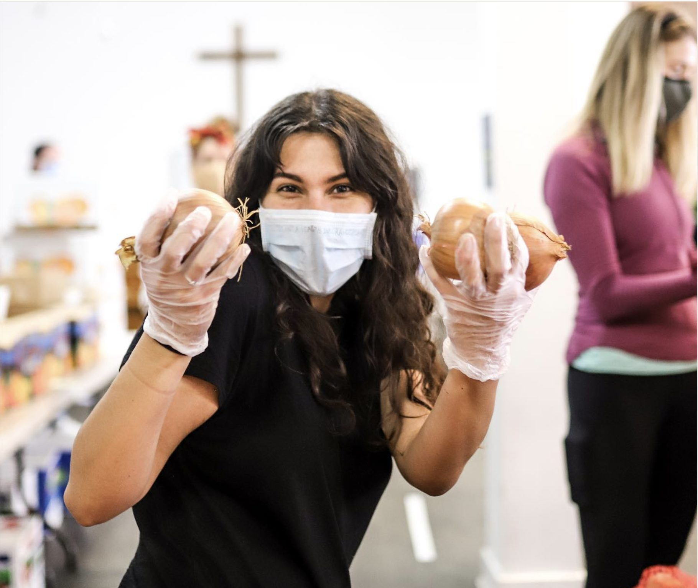
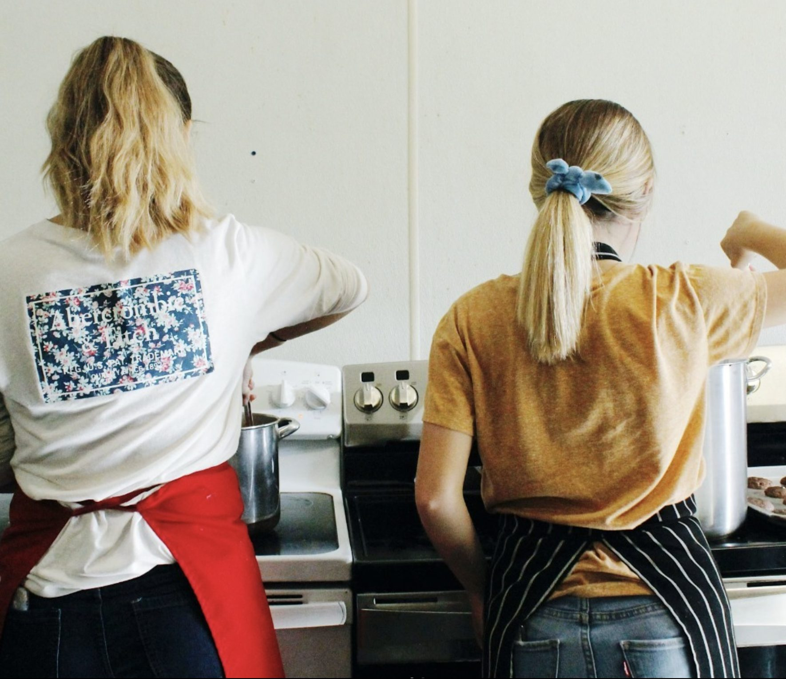

Come volunteer
Come for a shift. Stay for the people.
Every day we open our doors to serve our neighbors, our students and our outreach teams. It’s a big job, and we can’t do it alone.



Ways to serve · for Bay Area volunteers
Pick a shift. We’ll save you a seat.
Swipe the cards or tap a shift in the list below. The details and sign-up are right under the cards.
All shifts · 357 Ellis St
| When | Shift | Time | Status | Sign up |
|---|---|---|---|---|
| THURSDAYS | FOOD PANTRY | 1–4 pm | Weekly | Sign up ✉ |
| MON, TUE, WED & FRI | THE ELLIS ROOM | 10:30–4:30 | Weekly | Sign up ✉ |
| FRIDAYS | HOT CHOCOLATE MINISTRY | 6:45–9 pm | Weekly | Sign up ✉ |
| SUNDAYS | POP-UP CHURCH | 7:30–9 am | Weekly | Sign up ✉ |
| 2ND & 4TH SUNDAYS | TENDERLOIN CONNECT | 2–5 pm | Weekly | Sign up ↗ |
| ALL YEAR | MAINTENANCE | one day or more | Ongoing | Sign up ✉ |
Tap a shift to see it above, or sign up straight from the list.
Live outside the Bay Area?
Serve for a summer, or a season.
Join our Summer of Service, or come as a Mission Builder: use your skills in maintenance, cooking, administration or photo and video, in exchange for free or subsidized room and board.
Presence that restores.
Design concept YWAM 7 (a simpler YWAM 6) for the YWAM San Francisco refresh — not the live site
Ask YWAM SFInstant answers from our website
Automated answers, not a person. A real person replies at info@ywamsanfrancisco.org or 415-885-6543.